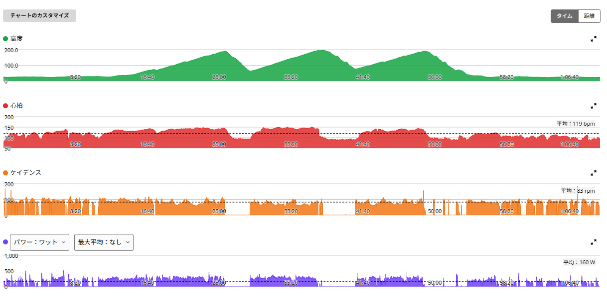
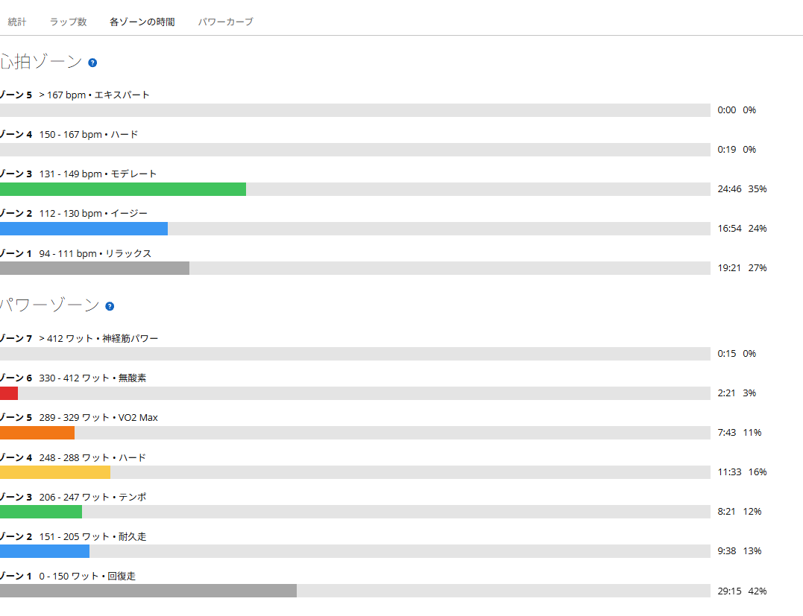

脚は軽い。でも睡眠が悪かったので抑える。唐沢山3本の回復寄りライド
今日は唐沢山へ。前日は太平山反時計回りで、51.60km・TSS152.8としっかり負荷を入れた。
朝の脚は意外なくらい軽かった。ただし、睡眠の質が落ちていた。「脚は動く。でも全身の回復は万全ではない」。そんな日として、出力を抑えめにして唐沢山を3回登ってきた。

25.34km・NP218W・TSS71.8
- 全体25.34km / 1時間09分09秒 / 獲得442m / 平均気温25.3℃
- 負荷平均160W / NP218W / IF0.792 / TSS71.8
- 心拍・回転平均119bpm / 最大151bpm / 平均83rpm
- 効果有酸素TE3.1 / 無酸素TE0.1 / 運動負荷94

脚は軽かった。でも睡眠は悪かった
面白かったのは、脚自体は軽かったこと。前日にしっかり走った割には、筋肉的な重さはあまり感じなかった。普段なら「脚が軽いなら今日は行ける」と判断して、もう少し踏んでいたかもしれない。
でも今日は睡眠の質が良くなかった。なので、脚だけではなく全体の状態を見て抑えた。最近は、トレーニングの判断でパワーや心拍だけを見ることが減ってきた。脚の感覚、睡眠、気分、前日の負荷。そういうものを全部合わせて考えるようになっている。今日はその中でも睡眠を優先した。
回復走だけど、唐沢山を3本
今日は完全な平坦回復走ではない。唐沢山を3回登っている。登りでは250〜290W台も使っているが、前日のように300W前後を長く維持する走りではない。心拍も高強度ゾーンにはほとんど入らず、ゾーン4はわずか19秒、ゾーン5はゼロだった。
数字を見ると、「完全に休む日」というより、「登りで軽く刺激を残しながら、全体負荷を落とした日」という感じである。
狙いどおり、TSSは前日の半分
前日のTSSは152.8。今日は71.8。ほぼ半分まで落とせた。外を走りたい気持ちはある。でも、連日ずっと高負荷にする必要はない。だから今日は、時間は1時間強、登りは入れる、でも出力は抑える。全体ではTSS70台。これは狙いどおりである。
膝は今回も問題なし
最近気になっていた膝も、今回のライドでは問題なし。自転車に関しては、もう基本的に大丈夫そうだ。今週いっぱいは最大出力で踏み込むようなメニューだけ控えるが、必要以上に出力を落とすつもりはない。違和感が出たらその都度調整、出なければ普通に乗る。そのくらいで考えている。
今日やってみて思ったこと
今日は「脚が軽い＝高強度をやる日」ではなかった。脚は軽い。でも睡眠は悪い。だから抑える。こういう判断も、長く積み上げるには必要なんだと思う。
しかも、ただ流すだけではなく、唐沢山を3回登ってTSS70台。休みすぎた感じもない。肝心の睡眠を数字で残していなかったのはAIの言うとおりで、そこは次から直す。今日は「休む」ではなく、「抑えて積む」。そんな一日だった。
次に見るポイント
- 睡眠睡眠が戻れば次はONへ戻す。睡眠は感覚だけでなく数字でも残す
- 負荷の調整外を走る日でもTSSで負荷を調整する
- 判断脚の軽さだけで高強度を決めない
- 高強度今週いっぱいは最大出力系のみ控える
- 膝基本問題なしとして扱う